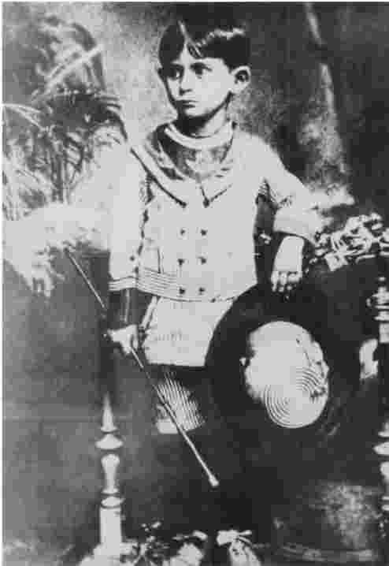
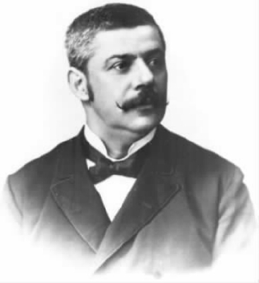
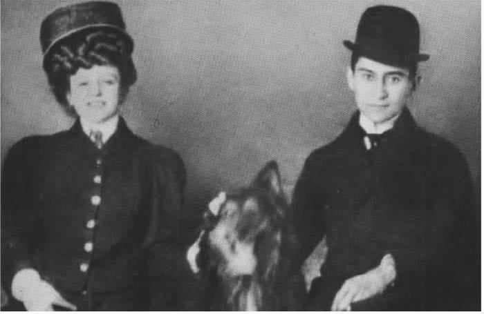
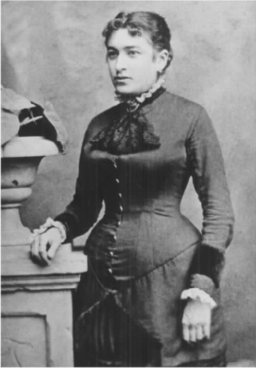
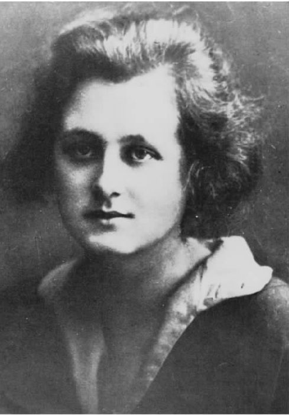
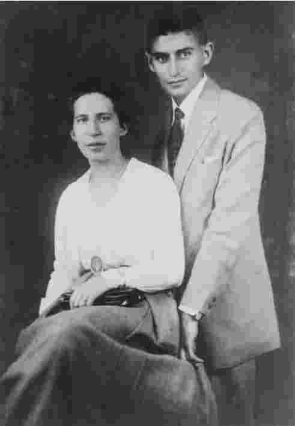
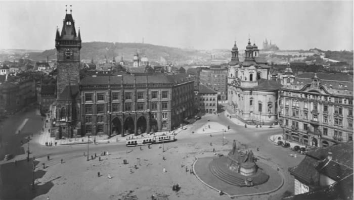

弗兰茨·卡夫卡生平的基本情况比较平常，甚至毫无特色。他1883年7月3日出生于布拉格，其时他的父亲赫尔曼·卡夫卡、母亲尤莉·卡夫卡在布拉格开了爿小店，卖些新奇物品、伞之类的东西。卡夫卡兄妹六个，他排行老大，两个弟弟不幸幼年早夭，不过三个妹妹寿命都比他长。读大学时他修读法律，毕业后经过一年实习正式开始工作。他先就职于一家总部位于特里雅斯特的保险公司名下的地方分公司，一年后进入国立的工人事故保险事务所，工作职责包括处理工伤索赔事宜，还有察访工厂，进行设备和安全措施检查，以预防工伤事故的发生。空余时间里，他就写些散文随笔和故事在杂志上发表；以1912年的《沉思录》为开端，这些随笔和短篇小说还以小书的形式出版。
1912年8月，卡夫卡与从柏林来访的菲莉斯·鲍威尔相识。菲莉斯比他小四岁，在柏林一家生产办公设备的公司工作。他们的关系，包括两次婚约，在很大程度上靠书信来维持（他们总共只见过十七次面，最长的一次是在1916年7月，两人在一家旅馆待了十天）。最终，这段关系结束了。当时，卡夫卡在1917年8月体内大出血，后来查出是结核病所致；他只好到农村修养，自己也不知道还能活多久。后来的日子里，短期工作和疗养院休养先后交替，就这样一直到他1922年提前退休。1919年，他和二十八岁的女职员尤莉·沃律切克有过短暂的婚约。但后来，卡夫卡又遇到已婚的密伦娜·波拉克（娘家姓耶申斯卡），于是他和沃律切克的关系破裂了。波拉克是个活跃的记者，她的丈夫曾将卡夫卡的部分作品翻译成捷克语，丈夫是个粗心人，因此和他在一起生活得不甚如意。由于密伦娜住在维也纳，卡夫卡和她见面的次数很少，两人的关系在1921年初结束。两年后，卡夫卡最终离开了布拉格，和朵拉·笛亚芒——一个从极度正统的波兰犹太家庭逃离出来的年轻女人——定居柏林。然而，卡夫卡的健康状况急剧恶化，他辗转于维也纳附近的几家诊所和疗养院之后，于1924年6月3日与世长辞。卡夫卡生前出版了七本小书，还留下了三部没有完成的小说与大量的笔记和日记。卡夫卡曾经指示他的朋友马克斯·布罗德将这些笔记和日记销毁，幸而布罗德没有按他的意思执行，所以我们今天才得以看到它们。
卡夫卡的文化偶像地位，就是根据上述材料以某种方式制造出来的。这个神话般的卡夫卡，在彼得·卡帕尔帝的短片《弗兰茨·卡夫卡的美好生活》（1994）中的病态隐士身上有典型体现。好不容易写出了《变形记》的第一行，结果这个“K.先生”被吸引到圣诞庆典中，变得非常平易近人，甚至让人家“就叫我F好了”。倍受折磨的卡夫卡之于20世纪（以及现在的21世纪），犹如那个忧郁的拜伦之于19世纪。“卡夫卡式风格”，和曾经的“拜伦式风格”一样，是个很有力的形容词。但是，拜伦的形象是个险恶而性感的贵族，他鄙弃社会和宗教禁忌。卡夫卡的形象则与此形成对照：他是个民主的形象。卡夫卡的凡俗生平本身证明他是我们当中的一个：扎根于普通生活，因此经历过或者想象过惯常的恐惧、痛苦和绝望，且达到了我们所有人都可以感同身受的程度，这个程度即使和我们的实际经验不太相当，也和我们的种种忧虑乃至梦魇中的情形是相当的。
卡夫卡神话，就像拜伦神话一样，是作者自己塑造的。其基础即使不是作者的经历，也是他思考、撰述自身经历时塑造、阐述它们的方式。思考、撰述那些经历，一则为了自己，再则为了大众消费。两种情况下，作者本人和他小说中的自我投射都很难分辨。拜伦的读者把拜伦想象成他笔下主人公恰尔德·哈罗德和曼弗雷德 [1] 那样幻想破灭而忧闷的人。把卡夫卡和他小说中的主人公分开也一样难，这些人物的名字被一步步压缩（如卡尔·罗斯曼，约瑟夫·K.，到《城堡》仅剩一个字母K.）。卡夫卡自己就曾碰到这个麻烦。1922年1月，他在一家山区旅馆登记住宿时，发现里面的工作人员因为看错他的预订记录而把他的名字写成了“Josef K[afka]”。“我是该让他们纠正过来呢，还是让他们把我纠正过来呢？”他在日记里问道。
既然卡夫卡这个文化偶像从根本上是他自己塑造的，我们就没有可能越过这个偶像去发掘出真正的卡夫卡。那个焦虑的日记作者、那个无休止地给菲莉斯·鲍威尔和密伦娜·耶申斯卡写着发于痛苦而又让人痛苦的书信的人，和那个极有才干的职业人士、那个热心的业余运动者、那个不时快意忘情于成功写作中的小说家一样，都是真实的卡夫卡。问题的关键不在于纠正卡夫卡的偶像形象，而是要回到卡夫卡的作品里，去发现他如何将自身经历和生活情境转化成这个形象。与此同时，还有很多关于卡夫卡的事实性错误在流传，其中有的可以追溯到早期传记和回忆录作者们的歪曲说法。只要对他的生平和所处的历史背景做一个准确、全面的呈现，就可以修正那些歪曲的说法。但是，我们还是从卡夫卡其人开始。

图1 卡夫卡四岁。
卡夫卡是个很有自我分析精神的作家，有时候甚至沉迷于自我。他在日记和书信里对自己的生活以及生活出了什么问题做了许多反思。他的小说创作则是较为间接地塑造、理解个人经历的方式。1914年10月15日，他从工作中暂时停下来集中精力写《审判》时，他记道：“这半个月的工作很棒，一定程度上对自身情况是个彻底的（！）认识。”虽然有无数的线索将他的经历和他的小说联系起来，而且辨识这些线索确实也有一些价值，但是卡夫卡的作品和别人的作品一样，不能归结到那些可能的生平背景。正是因为卡夫卡的小说远远超越了其创作的起因，我们才不得不去注意卡夫卡。
《致父亲的信》
要大致了解卡夫卡的个人经历，并弄清他如何开始在反思的过程中将个人经历写进小说，我们不妨来看看他最长的一篇自我分析，即那封著名的《致父亲的信》。这封信写于1919年11月，卡夫卡在信里分析了他和父亲之间的关系。他原来似乎是打算将信寄给父亲，希望能借此消除彼此的疑虑。但是他的妹妹奥特拉和母亲——他显然先把信给母亲看了，后来还给妹妹看了——都劝他不要寄，于是他把信作为个人档案保存起来。1920年，卡夫卡曾把信拿出来给密伦娜看，好帮她认识他。
这封信的首要意义在于它是个自我治疗性的努力。卡夫卡努力认识父子关系，以此来和父亲划清界线。由于这封信是卡夫卡为自身成长考虑有意而为，因而我们不能将它看成是对他父亲赫尔曼·卡夫卡公允的或者完整的描绘。但是，也没有理由认为信中的一切其实都是假的，信里对他父亲很强的个性还是做了比较合理的呈现。赫尔曼·卡夫卡白手起家，他在一个名叫沃赛克的南波希米亚村庄长大，生活极度贫困。七岁时就被迫推着小贩车，到各个村子四处叫卖。年轻时的困苦给他留下了清晰的印象，后来他不断地给孩子们讲述那些困苦经历，埋怨年轻一代意识不到他们的生活是多么宽裕，惹得几个孩子煞是心烦。赫尔曼不懈地工作，加上娶了富裕的啤酒坊主的女儿尤莉·略维为妻，从而得以在布拉格中心地区开了家店面。他身上自信的成分明显多于感性。他教育卡夫卡的方式是粗鲁的玩闹（比如绕着桌子追他）和夸张的威胁——夸张得能把想象力丰富的小孩吓坏（“我会像撕鱼一样撕了你！”）。卡夫卡追述了一个小事件：当时他还是个小孩，有天半夜里把他父母哭醒了，结果父亲把他从床上拎起来，放在他家房子后面的门廊上面，这让卡夫卡觉得——起码后来回想起来是——他和父亲相比似乎什么都算不上。赫尔曼·卡夫卡用他儿子称为“暴政”的方式管理家务和店务，批评孩子时重言讽伤，对雇工说话的样子和说出来的话都很凶蛮。他用高压手段对待雇工，一件事情就可以说明：有次所有雇工都辞了职，弗兰茨得去一个个拜访他们，劝他们回来。我们由此可以看到一幅一致的人物性格素描。按照今天的标准，人们对他在家里和工作中的为人方式都不会有太高的评价。当然，有种东西卡夫卡没有也无法传达，那就是赫尔曼·卡夫卡肯定怀有的灰心沮丧感——因为人们不能遵从他所给出的明显合理的指令，还因为他与自己的孩子之间有隔阂，尤其是与卡夫卡以及与不守常规的小女儿奥特拉之间有隔阂。对赫尔曼和尤莉·卡夫卡在他们唯一幸存下来的儿子（另两个儿子分别在十五个月和六个月时死去）身上所做的情感投资，弗兰茨的信中也没有表现出感激之情，这一点有助于说明父母何以对他感到失望。他们拿弗兰茨年龄最长的堂兄布鲁诺·卡夫卡作为成功的标准：布鲁诺是位杰出的法学教授，后来成为著名的政界人物。可是，长大后的弗兰茨志趣怪异，在职业上没什么成就，也没有明显的能力娶妻成家。

图2 卡夫卡的父亲，赫尔曼·卡夫卡。
按照卡夫卡自己的描述，他感到被他的父亲压制了。赫尔曼·卡夫卡庞大的身躯（对小孩来说肯定是巨大的）、大嗓门下的自信和绝对的权力，让他看起来像个巨人。“单是您形体的存在就让我有压迫感。”卡夫卡写道，同时回忆起一次他们在游泳场洗浴更衣时，他父亲的庞大躯干使他显得像个“极小的骨架，站也站不稳，赤脚站在木板上，怕水，不会模仿您划水。”吃饭时，赫尔曼·卡夫卡狼吞虎咽，大口大口地，一点也不怕烫，把骨头咬得嘎嘣响，却禁止别人这么做。（这里我们可以发现卡夫卡小说中许多残暴的食肉人物的由来，从《失踪的人》 [2] 中贪婪的格林到《绝食表演者》草稿中吃人肉的野人。）长大些后，卡夫卡发现他的身体长得太高太瘦，对自己瘦长的身材感到不舒服。与他父亲相比，他对身体缺乏自信，这不过是他多方面不安全感的一部分。他的父亲为成年人的自信树立了一个榜样，而且永远是无与伦比的。开始时，弗兰茨在他面前说话吞吞吐吐，到最后尽量避免和他说话。他父亲发号施令，自己却不遵守那些命令。这样一来，父亲似乎行使着绝对的权力，而且该权力最终是以个人气质为基础的。由于赫尔曼·卡夫卡有这种力量，他可以不管前后是否一致或者是否符合逻辑，任意指斥所有人，而没有人敢挑战他。“我看您获得了所有暴君所具有的神秘品质，这些暴君们的权力的基础是他们本人而不是他们的思想。至少在我看来是如此。”他的父亲似乎完全占据了他，像一个人趴在世界地图上似的，一点空间也不给弗兰茨留下。卡夫卡无法模仿父亲，只能怪自己无能。按照他自己的总结：“因为您，我丧失了自信，反过来，得到的却是无尽的内疚感。”
赫尔曼·卡夫卡统治得最稳固的地方是婚姻。他娶妻了，弗兰茨却没有，但是大家希望他能娶上。成年的卡夫卡把这个处境解释为一个进退两难之境。
卡夫卡在这里明确表达的，就是弗洛伊德所描述的经典的俄狄浦斯式的父子关系。男性要长大成人，就必须长成他父亲那样性方面成熟的人；但是他又必须对抗父亲，把他从家庭中唯一的或者说至高无上的性成熟的男性地位上拉下来。要胜过父亲，他必须和父亲对抗。可弗兰茨又多了一个难处：据他自己称，他小的时候对性没有丝毫兴趣，一有人提到性，他就会拘谨，有受冒犯的感觉；赫尔曼·卡夫卡则对性直言不讳。卡夫卡的父亲曾暗示他应该去逛逛妓院，这对十多岁的弗兰茨来说是“世界上最龌龊的事情”。所以，按照卡夫卡的说法，他自己要寻找配偶的愿望受到了负面力量——软弱、不安全感、内疚、缺乏自尊——的阻挠，而这些都是他父亲输入到他身上的。
按照卡夫卡自己说的，他用什么办法才能避开父亲的影响呢？一种可能就是找个职业。卡夫卡确实承认，他想学任何东西，他的父母都允许。（这可不是小事。读大学意味着最少四年可以继续住在家里，不用挣钱，再过很长的时间以后他才可以挣足够的钱来帮助父母或者自己独立成家。）但是这里的允许所隐含的自由，按照卡夫卡的说法，已经提前被否定了。因为他沉重的内疚感使他对学校学习提不起劲，他完全相信自己每年年终考试都不能通过，虽然实际上每次他都通过了。他对学习的兴趣很低，那程度（用他自己的话说）就像个欺骗了自己雇主的高级银行职员在等着被人家查出来时，对日常交易业务还能保持的兴趣那么大。所以，既然每个科目都吸引不了他，那就不妨学一门吧——法律，绝对让他讨厌的一门。“考试前的那几个月，”卡夫卡痛苦地回忆道，“我的神经极度紧张，每天的精神食粮味同嚼蜡，况且那还是之前已经被千万张嘴嚼过的蜡。”卡夫卡解释自己何以选择法律的原因显得极其违反常情，有受虐狂的味道，不过对于任何一个没有明确计划或兴趣的人，法律显然是该选的大学课程，因为它为人们在法院、工业、商业、金融和公共服务等领域提供了广泛的职业选择。
要逃离赫尔曼的世界，一个明显的出路似乎是文学。卡夫卡承认，写作确实给他带来些许解脱。但是，写作并没有带来自由，因为他有什么可写呢？“我所有的作品都是关于你的；只有在你的怀里无法感伤的东西，我才到写作里感伤一番。”这当然是夸大其词。强大厉害的父亲确实在《判决》和《变形记》中出现了。一个咒骂自己的儿子，让他去溺死算了；另一个扔苹果砸他的儿子（其时已经变成甲虫），让他受到致命的伤害。即便如此，创造此类半恐怖半荒诞的人物形象显然是卡夫卡摆脱控制自身处境的方式。然而，在《致父亲的信》中，卡夫卡把所有的作品都说成是另一种形式的依赖，虽然他没有摘引具体段落为证。从生活逃入文学注定失败，因为文学写的必然是生活。

图3 读大学时的卡夫卡同他在校时的情人之一——服务员汉茜·索科尔，约1906—1908年。
《致父亲的信》在多大程度上是自我分析？信里以高度戏剧化而又基本合理的方式呈现出作者的样子：这个人的自尊，因为不太敏感的养育方式以及自感达不到父母的期望，受到了严重的伤害。当然，他如此强烈地感到自己的失败，恰恰表明卡夫卡已经很深程度地接受、内化了父母的期待。他也感到应该结婚成个家，可是他有此希望是因为父母有此希望。卡夫卡敏锐地分辨出他在父子关系中所处的两难境地。他指责父亲冀望他娶妻结婚，却把他的性格塑造得不能结婚。然而，他可能并不很清楚他的信在多大程度上表达、证明了这种两难处境。写信的目的也许是为了摆脱父亲的影响，但是卡夫卡把自己描述成完完全全是他父亲的产物，因此难以想象他还能够逃脱他的父亲。
在信中，母亲的作用显得小而又小，这可能会让我们感到惊讶。她只是作为父亲的助手出现，跟他太近，以至于不能为受其权威压制的孩子们提供任何庇护；但是，她也是个不开心的中间人，受到丈夫和孩子们的压迫。“我们残忍地打击她——你从你的方面，我们从我们的方面。”卡夫卡有两个故事与他的家庭生活明显有关：《审判》和《变形记》。其中，《审判》里的母亲死了，而《变形记》里的母亲虽然很关爱那个“不幸的儿子”，但是却无能为力，关键时刻自己先昏倒了。然而，在心理分析者看来，卡夫卡感情脆弱不仅缘于父亲的支配，还因为母亲早就不再关爱他。卡夫卡的日记中显示出尤莉·卡夫卡经常因为古怪的儿子“叹息啜泣”，让他心烦，而且母亲根本不能理解他；他埋怨母亲把他当成一个普通的年轻人，认为他会暂时把各种奇怪念头搁到一边，像其他人那样娶妻成家。卡夫卡写给菲莉斯的一封信的“又及”里记录了一个感人的时刻，从中可以感受到他和母亲之间的隔阂以及深藏的爱：

图4 卡夫卡的母亲，尤莉·卡夫卡。
这封《致父亲的信》不可等闲视之。它里面包含了大量的实际经历和有见地的自我分析。但是，很大程度上，它讲了个故事——就像卡夫卡讲给自己听的关于自己生活的故事。有一点无可辩驳：也许心理分析所能提供的最好的东西，也不过是一个令人满意的故事，讲的就是我们何以变成现在的样子。不过，这个故事显示出《致父亲的信》和自《失踪的人》以来卡夫卡那些描述内疚的小说之间的关系。确实如此，我们可以看到卡夫卡用想象创造出一个堪比狡诈的银行家的人，这听起来像是另一部《审判》似的小说的萌芽。
结婚
卡夫卡生活中有两件事显得特别重要，这两件事在他《致父亲的信》中只是一笔带过，但是值得进一步探讨。一件是他没有实现的愿望——结婚，另一件是写作对他的重要性。
听卡夫卡说话，看他的行为，仿佛结婚是他生活的核心计划。
《致父亲的信》里，这句话出现时不带个人色彩，不免让人感到好奇。它描述的不是卡夫卡个人为自己选择的目标，而是“人们的”目标。当他努力去实现该目标时，他发现自己不仅业已置身于自己所指出的两难的家庭困境中，而且选择伴侣这一行为其实是在重蹈该两难困境。比他小四岁的菲莉斯·鲍威尔是个聪敏的女性，她学识渊博，工作上极为能干。卡夫卡佩服她，但要是说性的吸引，或者即使是她在身边时的愉悦感，却几乎没有。1915年1月和她一起度过一段时间后，卡夫卡在日记里写道：“除了在信里之外，与F.一块儿时，比如在祖克曼特尔和里瓦的时候，我从来没有感到和一个所爱的女人间的那种甜蜜关系，只有无限的钦佩。”1905年和1913年他们分别在祖克曼特尔和里瓦的风景胜地度假时所发生的关系，是随意而平静的情事。可是，将要和极有才干的菲莉斯结婚，让卡夫卡心里的无能感更甚。这也意味着他将重新过上令人窒息的家庭生活，而他就是在这样的家庭生活中长大的。菲莉斯带他去买家具，家具却使他想起了墓碑；她还坚持他们的公寓里要有“个人风格”，这偏偏又是卡夫卡讨厌的词语。在正式的订婚仪式上，他感觉“像个罪犯一样被捆了起来”。他寄给她的信和明信片总共有五百多封，里面流露出他极大的情感需要，他希望了解她的生活——这间接说明了他的控制欲，还显示出他们之间奇怪地缺乏亲密感。卡夫卡好像还不知道鲍威尔家庭中那些需要她来面对的问题：她的父母已经疏远多年，其间她的父亲和情人生活在一起；她的兄弟是个骗子，最后逃到了美国；只有菲莉斯知道，她未婚的姐姐已经怀有身孕。虽然菲莉斯的信没能保留下来，我们完全可以设想到，菲利斯一定觉得卡夫卡虽然有趣、有吸引力，但是也很让人恼火。1914年7月2日，她解除了和卡夫卡的婚约，不过两人一直还保持着联系，然后1917年7月再次订婚。

图5 密伦娜·耶申斯卡。
卡夫卡和密伦娜的关系与他和其他几个女人的关系表现出类似的模式，即认定自己无能，不过密伦娜在思想上和他更有共鸣。与给菲莉斯的信相比，他给密伦娜的信中更愿意表露自己。给密伦娜的那些信的基调是不安全感、恐惧和极度的自我贬低。他把自己比喻成一个将死之人，躺在肮脏的床上，接受死亡天使——“所有天使中最圣洁的一个”——的拜访。不过，这一回，我们还能看到这个女人对于二人关系的看法。不论是关系正在进行中还是结束后，她都在给马克斯·布罗德的信中说到卡夫卡，埋怨他去一下邮局柜台这样的小事都不愿意干，以及幼稚地佩服别人的能干（包括菲莉斯，甚至密伦娜的丈夫、勾引高手恩斯特·波拉克）。但是，她也认为卡夫卡对这个无限陌生的世界有着神秘的理解，她还对卡夫卡独特的性格表示赞扬：
卡夫卡的情感生活有另一个模式，那就是他对年轻女性具有吸引力，不过她们没有像菲莉斯和密伦娜那样，让卡夫卡把她们理想化到自感无助。卡夫卡1919年度假时与尤莉·沃律切克相识，但是关于她，人们所知甚少。就是因为父亲不同意他们俩的短暂婚约，才有了那封《致父亲的信》。可他一与密伦娜好上之后，马上就和尤莉分手了。这让尤莉非常难过：“你真的要丢下我吗？”卡夫卡与朵拉·笛亚芒的关系一度看起来前景很光明。现在人们也已经知道，笛亚芒跟菲莉斯和密伦娜一样优秀。卡夫卡1923年8月度假时结识了她，当时她二十五岁，比卡夫卡小十五岁，独自生活在柏林。她和卡夫卡一样，对犹太复国运动和犹太文化产生了越来越强烈的兴趣；他们还计划移民巴勒斯坦，在那里开家餐馆，朵拉当厨师，他当服务员。两人的计划根本没有实现，不过她确实帮卡夫卡摆脱了他的家庭，离开了布拉格，在柏林度过了可能是他一生中最快乐的时光，直至结核病最终要了他的命。后来，朵拉成了著名演员，一名积极的共产主义者（像密伦娜那样）。她先是移民到苏联，后又去了英国，1952年在伦敦去世。
卡夫卡处理关系上的种种困难均记录于篇幅很长且往往显出他自我沉迷的信件和日记中，这些困难自然在后代人对他的印象中很突出。有人简单轻率地提出了一些解释，其中一种说法是卡夫卡绝对是个同性恋。虽然这个说法的前提带有非常缺乏深思熟虑的性别角色观，但是毫无疑问，卡夫卡的想象里确实有同性爱的一面。生活中，他乐于参加的文学和娱乐聚会，其成员全是男性，包括他的朋友马克斯·布罗德和弗兰茨·魏菲尔（肥胖的布拉格德语文学奇才）。卡夫卡也晓得当时对男性健美的广泛推崇，这在“候鸟”运动里有突出的表现，该运动鼓励年轻人徒步穿行德国。“候鸟”运动的领导者汉斯·布鲁尔写的那本论男同性恋关系的书，卡夫卡读得颇有热情。1917年11月20日，他在给布罗德的信中愉快地写道：“如果我再补上一句：我前不久在梦里吻了魏菲尔，我马上就成了布鲁尔书里写的东西了。”在这个圈子里，男人之间是可以表达爱意的，至少可以用语言表达，而无须感到尴尬。因此，有好几封给布罗德的信中，卡夫卡说“吻你”以对布罗德送他礼物表示感谢。《失踪的人》的第一章中，就是一种同性恋般的友谊把卡尔·罗斯曼和司炉工联系了起来（卡夫卡对以《司炉》为题将这一章单独发表没有任何顾虑）。《在卡尔达铁路上》的残篇里，主人公孤独地待在俄国的中部，只有在监察员偶尔来访时情况才有改变。监察员来访时两人的拥抱就有同性恋意味。《城堡》高潮时的情景之一是K.做了个梦，梦里一个城堡秘书赤裸着身体，成了希腊神话中的神仙（“希腊”本身就是男同性恋的一个标准代码）。相反，卡夫卡的小说将异性间的性交描述得肮脏、吓人。在《失踪的人》里，凶猛的克莱拉带着想做爱的样子靠近卡尔，接着却用柔道手法把他摔在地上。《审判》中，动物般的莱妮手指交叉成网状勾引约瑟夫·K.，她把K.拖到地上后宣布：“现在你属于我了。”最让人难以接受的是《城堡》中，K.和弗里达在酒吧间地板上的水洼间做爱。可是书中用了非常抒情的语言表现该场面，言外之意是：性虽然有其肮脏之处，但也能表达爱和自我迷失。卡夫卡曾对密伦娜说：他的性欲让他感觉自己像个“流浪的犹太人”：“糊里糊涂地被吸引，然后在一个毫无意义的肮脏世界里糊里糊涂地流浪。”他还说性“有点像人类堕落前在乐园里呼吸的空气”。类似的段落表明：给卡夫卡的性想象贴上个标签是毫无意义的。相反，应当把他的以性为主题的作品反复阅读，去欣赏其情感的坦诚实在之处，因为正是这种坦诚实在，让卡夫卡把一些非常难以说清的情感紧密结合起来。
“我就是由文学组成的”
卡夫卡考虑结婚时，影响他的主要障碍是他对写作的挚爱。写作对他的重要性，怎么夸张都不过分。“我没有文学兴趣，我就是由文学组成的。其他什么都不是，也不可能是。”他在跟菲莉斯说这些话的时候（之前菲莉斯把他写的字给一个书法鉴定师看过，那人从卡夫卡的笔迹里看出他有“文学兴趣”），也几乎没有任何夸张的成分。他害怕结婚会搅了写作所需要的那份孤独。菲莉斯有回提出：他写作的时候，她可以坐在他身边。卡夫卡回答她的话时设想了一种生活：在宽阔的地窖靠最里面的那间屋子里，他坐在写字台边写作，除了从地窖门外传来给他端饭过来的人的脚步声，没有任何东西打扰他。就是在可以独处的时候，写作依然是困难的、让人丧气的。卡夫卡的日记里到处可以找到写了一页半页后就停了的故事，还有对自己没有能力写作的懊恼和责备。只有偶尔一些时候，他不用有意识地费多少努力就能写得比较顺利。这样的时刻，最突出的是1912年9月22日至23日的夜晚。从22日夜里10点到23日早上6点，他坐在写字台边写《判决》，一口气写下来没有停过。“只有 那才是写作的样子，”他第二天在日记里记道，“必须有这样的连贯性，肉体和灵魂才能这样完整地敞开。”这一文学上的突破出现在他首次见到菲莉斯的一个月之后，他告诉布罗德：写故事结尾的时候，他有种强烈的喷发的感觉。故事的最后一个词是Verkehr，它在上下文里的意思是“道路交通”，但是也有“（性）交合”的意思。是否他的性欲，被菲莉斯激起来之后，却转入了写作？
写作顺利不仅让卡夫卡有极为畅快的感受，写作还让他得以超脱个人生活里的诸多痛苦事件。不愉快的经历往往能激发他的创作力。《审判》和《流放地见闻》是在他解除婚约后的几个月里完成的，他曾在日记里把解除婚约的场面描述成“庭审”的样子（预先提出了结构这两个故事的有关公正的隐喻）。开始写《城堡》之时则是他和密伦娜关系行将结束之时。通过写作，他可以有一个更高的视角，从而能摆脱徒劳无益的自我分析。1922年，他这样记道：写作给予的慰藉，让他从“杀手的行当”里跳出来，在这个行当里，每一个行为紧接着就被自我观察否定，让他可以形成“一种更高层次的审视——更高层次的，而不是更敏锐的；愈有高度，从‘杀手的行当’就愈难获得，就愈能遵照它自己的运行规律，其轨迹也就愈难预料、愈让人愉快、愈向上升。”此外，他感到他的写作不仅仅是自我治疗：它表现了那个时代。1916年，卡夫卡向他作品的出版商承认：《流放地见闻》是个“令人痛苦的”故事。他进而解释道：“我们这个大时代，具体而言是我所处的这个时期，是一个令人非常痛苦的时代。”后来，他把自己的写作看作一个神秘的使命。“我依然能从《乡村医生》等作品里找到暂时的满足，”他1917年提到，“倘若我能多写出点那样的东西的话（这不太可能了）就好了。但是，只有把世界提升到纯洁、真实、恒久的层面，我才真正感到高兴。”不论这么说意义何在，很明显，他赋予作品的意义不仅仅是个人性的。

图6 卡夫卡和菲莉斯·鲍威尔，1917年。
卡夫卡热爱写作，他也承认他在写作上有榜样和英雄。文学上的血亲，他说有福楼拜、陀思妥耶夫斯基、克莱斯特和格里尔帕策 [3] 。他热心地读了他们的作品，包括他们写的不公开的东西，也在生活的某些方面向他们看齐。说到格里尔帕策，那些使他成为奥地利最伟大戏剧家的剧本，卡夫卡并无兴趣，他感兴趣的反倒是那本讲主人公如何挚爱艺术却误入歧途的小说《可怜的行吟诗人》（1846），以及格里尔帕策何以有个女人不敢娶，却又和她长期保持着关系。卡夫卡订婚时，浮现于脑海中的形象是一些被罚劳役、受束缚的罪犯，这些意象则来自陀思妥耶夫斯基被流放到西伯利亚的经历。至于福楼拜，有两段引文尤其适合卡夫卡。一段出自他1868年9月9日写给乔治·桑的一封信，当时福楼拜正在为《情感教育》（这是福楼拜作品中卡夫卡最喜欢的）的结尾大伤脑筋：“我从不问世上发生了什么事情，我的小说是我坚守不放的磐石。”话里的意思，与卡夫卡自己对写作的挚爱如出一辙。另一段话是福楼拜的侄女卡罗琳·考曼维尔（1909年曾前往布拉格，布罗德采访了她）记录的。卡罗琳带福楼拜看望了一个已婚的朋友，那个朋友一家子人丁众多，之后他懊悔地说：“他们活得很实在。”这句话十足地道出了卡夫卡对文学创作中那些无法衡量的损失以及所得的感受。
基本上讲，卡夫卡更是个好读不倦的人，并通过订阅当时的主要文学期刊《新评论》，随时掌握当代文学的发展状况。《新评论》的品味温和而保守，同卡夫卡的相似。那些年轻的表现主义作家们吵吵嚷嚷的样子，他不喜欢。他赞赏的是准确、简约和曲笔，尤其是彼得·艾腾贝格和罗伯特·瓦尔泽的短篇随笔以及契诃夫和托马斯·曼的早期短篇小说中所体现出来的这种风格。他也喜欢狄更斯，这可能让人感到惊讶，但是其中纯粹、饱满的活力给他印象很深——尤其因为他感到这正是他不足的地方。他最喜欢的书包括儿童历险故事，这在《夏弗斯坦小绿皮书》系列里面就有，其中包括的故事有的是一个德国种糖人讲述的，还有的是一个目睹了拿破仑俄国战争的士兵讲述的。他还非常爱看电影，喜欢看的有一部西部片子（《金子的奴隶》）、一部讲卖淫的惊险片子（《白人奴隶》）和一个催人泪下的片子（《小罗洛蒂》）。在1924年1月的一封信里，卡夫卡提到了卓别林的《小孩》，该片当时正在柏林上映，这不禁让人联想却又不敢肯定：卡夫卡是否对这个善于板着脸不笑的滑稽大师有直接了解？毕竟人们经常把卓别林的作品和卡夫卡的作品相提并论。

图7 布拉格的老市镇广场。
因为卡夫卡一生的时光几乎全在布拉格度过，所以往往有人会以为，卡夫卡不管在地理上还是语言上都脱离了欧洲文学的大环境。身为一个犹太人，母语是德语，却置身于一个绝大多数人讲捷克语的省城，因此有时候人们会说他生活在一个三重特征合一的“隔都”。这一说法有失准确。在布拉格说德语的人占少数，他们绝大多数属于中产阶级，有自己的学校、剧院和报纸。1882年，古老的查理大学已一分为二，一边讲德语，另一边讲捷克语。但是，说德语的人根本就不是孤立地生活在单一的犹太人居住区，而是与讲捷克语的人杂居在一起，以至于去购物时不会讲几句捷克语都不行。讲德语的人数量在慢慢减少：1880年到1910年间，布拉格的人口从二十六万上升到四十四万两千，但是讲德语的人（即普查表上填明自己讲德语的人）却从三万八千六百人（14.6%）下降到三万两千三百人（7.3%）。卡夫卡的捷克语虽然谈不上完美，但是说、读、写都很流利。他有时候还去捷克国家剧院观看演出。他的德语既有德国南部语言区的特征（例如“吃午饭”是mittagmahlen，“吃晚饭”是nachtmahlen），又有布拉格的地方特征（例如说“一些”是paar而不是ein Paar），但他不会说也不会写“布拉格德语”。“布拉格德语”是一个世纪前德国民族主义者想象出来的方言。这些民族主义者认为只有生活在乡村的人，因为接近土地，才能说地道的语言，而生活在城市里的人说的语言必定是苍白的、贫乏的。卡夫卡发表的作品中的德语效仿的是经典的德语散文，既准确又正确。
卡夫卡名列布拉格的那一代重要德语作家之中，这一代作家还包括他的朋友布罗德和魏菲尔，以及年龄稍长的莱纳·玛利亚·里尔克。他们是奥匈帝国的公民，但是他们感兴趣的文化中心不是维也纳，而是柏林和出版重镇莱比锡。里尔克于1897年迁居柏林，因为他觉得奥地利是一潭死水。魏菲尔于1912年迁居莱比锡。布罗德的第一部小说《诺尼皮格城堡》（1908）在莱比锡出版，为他在柏林的先锋派作家中带来了很高的声誉（放在现在会有点难以理解）。卡夫卡的第一本书《沉思录》（1912）由出版商恩斯特·罗沃尔特在莱比锡出版。罗沃尔特的出版社当时由库尔特·沃尔夫接手掌管，他年轻有干劲，专门推广先锋派作家，尤其是那些来自布拉格的先锋派作家。卡夫卡一生出版了七本小书：《沉思录》、《司炉》、《判决》、《变形记》、《流放地见闻》、《乡村医生：小故事集》和《绝食表演者：故事四则》。这些书当时给他带来的名声并不大。罗伯特·穆齐尔，就是后来以《没有个性的人》（1930—1943）而闻名的那位，刚当上《新评论》编辑后不久写了篇文章赏析、评点《沉思录》和《司炉》。他还向卡夫卡约稿，不过卡夫卡因为交不出合适的作品，只好婉言谢绝了稿约。1915年，声望很高的冯塔纳奖的小说奖授予卡尔·施特恩海姆（现在人们记得最多的是他的热闹喜剧1911年的《短裤》）。施特恩海姆当时已是百万富翁，很欣赏卡夫卡的作品，因而不经人家三劝两劝就把奖让给了卡夫卡。作者在大众场合下朗读自己的作品，来为自己的作品做些宣传，这是常有的事。可是卡夫卡似乎只朗读过两次：一次是1912年12月4日为布拉格的一个文学协会朗读《判决》，另一次是1916年11月10日在慕尼黑的戈尔茨美术馆朗读《流放地见闻》。其中后一次里尔克去听了，他后来对卡夫卡大加赞赏。因此，卡夫卡生前也绝非无名之辈。不过，20世纪20年代他去世之后就出版的小说也没有从根本上让他的名气大起来。常人都以为他的书在1933年曾遭纳粹焚毁，但是我没有找到任何证据可以证明他们曾特别注意到卡夫卡。
从1930年翻译《城堡》开始，埃德温·穆尔和威拉·穆尔夫妇陆续将卡夫卡的作品翻译成英文，卡夫卡也从此开始享誉国际，但在法国的声誉却是慢慢起来的：亚历山大·维亚拉特翻译的《审判》于1933年出版，《城堡》译本于1938年出版。在英美国家，卡夫卡的名声更为响亮，他被视为现代人精神困境最完美的阐释者。W.H.奥登1941年提出过一个有名的说法：
这个观点要批评起来很容易。它源于马克斯·布罗德写的那本偶像化的回忆录，该书于1937年首次出版，1947年被翻译成英语。按照该回忆录，卡夫卡为痛苦煎熬中的现代人提供了有建设性的精神启示。在1951年首次出版的《卡夫卡谈话录》里，作者古斯塔夫·亚努赫将上述观点加以利用发挥。书中所辑谈话毫无顾忌，让卡夫卡自以为是地对现代社会的弊病评头论足，结果其他一些本可能真实的材料被湮没了。亚努赫的谈话录经常被人轻信引用，作为卡夫卡实际思考的问题的证据。其实更应该把它当成伪作。
但是，事实证明，卡夫卡的作品虽然为数不多，却已经成为现代经典。它们值得一读再读，每读一次都能发现新的东西，它们还为各派批评——从存在主义、结构主义一直到后殖民主义——都提供了批评材料。这些作品明显可见的多方面功用证实了它们的伟大，其实经典之作就是在于从每一个新的角度看都能有新的发现。卡夫卡的作品如何塑造并提出读者所衷心关切的东西，将在下面几章里论述。但是，我的目标不是要给卡夫卡的作品“解码”，或者明白无误地说出他的作品所论何事。认识卡夫卡，我们没有别的办法，只有阅读、揣摩他的作品。因此，下一章要思考的问题不是卡夫卡的文本有哪些意义，而是我们该如何去读它们。